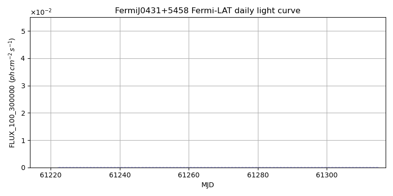
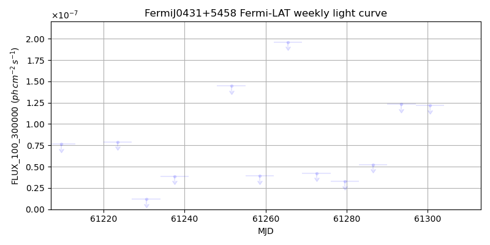
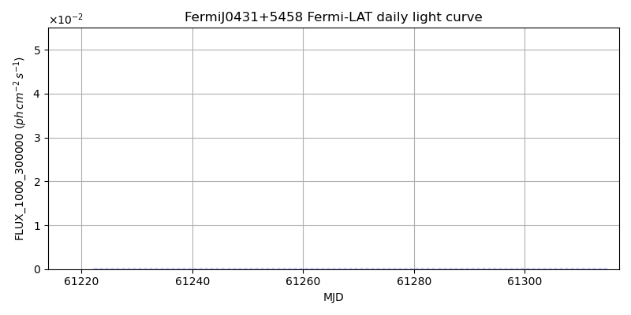
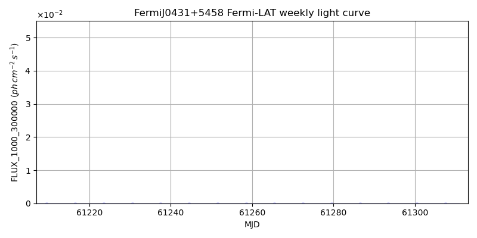

LAT Lightcurve site: https://fermi.gsfc.nasa.gov/ssc/data/access/lat/msl_lc/source/Fermi_J0431p5458
NED: Query
Time of last update of this page: UT: 2026-10-02 15:14 (MJD: 61315.635)
| Property | Value |
|---|---|
| R.A. | 4:31:26.40 |
| Dec. | 54:58:48.0 |
| z | 0.000 |
| 3FGL SpectrumType | |
| 3FGL PL Index | -1.00 |
| 3FGL Flux_100_300000 | -1.00e+00 |
| 3FGL Flux_1000_300000 | -1.00e+00 |
| 3FGL Flux >200 GeV | -1.00e+00 |
| 3FGL Extrap. Crab >200 GeV | -1.00 |
| 3FGL Flux After EBL Absorption >200GeV | -1.00e+00 |
| 3FGL EBL Crab Fraction >200GeV | -1.00 |

| MJD | dMJD | Flux | dFlux | Frac3FGL | FracCrab>200GeV | EBLFracCrab>200GeV |
|---|---|---|---|---|---|---|
| 61310.50 | 0.50 | 8.60e-07 | 0.00e+00 | 0.00 | 0.00 | -0.00 |
| 61311.50 | 0.50 | 7.95e-07 | 0.00e+00 | 0.00 | 0.00 | -0.00 |
| 61312.50 | 0.50 | 1.56e-07 | 0.00e+00 | 0.00 | 0.00 | -0.00 |
| 61313.50 | 0.50 | 8.42e-08 | 0.00e+00 | 0.00 | 0.00 | -0.00 |
| 61314.50 | 0.50 | 5.55e-07 | 0.00e+00 | 0.00 | 0.00 | -0.00 |

| MJD | dMJD | Flux | dFlux | Frac3FGL | FracCrab>200GeV | EBLFracCrab>200GeV |
|---|---|---|---|---|---|---|
| 61279.50 | 3.50 | 3.29e-08 | 0.00e+00 | 0.00 | 0.00 | -0.00 |
| 61286.50 | 3.50 | 5.26e-08 | 0.00e+00 | 0.00 | 0.00 | -0.00 |
| 61293.50 | 3.50 | 1.23e-07 | 0.00e+00 | 0.00 | 0.00 | -0.00 |
| 61300.50 | 3.50 | 1.22e-07 | 0.00e+00 | 0.00 | 0.00 | -0.00 |
| 61307.50 | 3.50 | 2.63e-07 | 0.00e+00 | 0.00 | 0.00 | -0.00 |

| MJD | dMJD | Flux | dFlux | Frac3FGL | FracCrab>200GeV | EBLFracCrab>200GeV |
|---|---|---|---|---|---|---|
| 61310.50 | 0.50 | 2.35e-08 | 0.00e+00 | 0.00 | 0.00 | -0.00 |
| 61311.50 | 0.50 | 1.75e-08 | 0.00e+00 | 0.00 | 0.00 | -0.00 |
| 61312.50 | 0.50 | 2.64e-08 | 0.00e+00 | 0.00 | 0.00 | -0.00 |
| 61313.50 | 0.50 | 3.39e-08 | 0.00e+00 | 0.00 | 0.00 | -0.00 |
| 61314.50 | 0.50 | 2.49e-08 | 0.00e+00 | 0.00 | 0.00 | -0.00 |

| MJD | dMJD | Flux | dFlux | Frac3FGL | FracCrab>200GeV | EBLFracCrab>200GeV |
|---|---|---|---|---|---|---|
| 61279.50 | 3.50 | 9.50e-09 | 0.00e+00 | 0.00 | 0.00 | -0.00 |
| 61286.50 | 3.50 | 7.04e-09 | 0.00e+00 | 0.00 | 0.00 | -0.00 |
| 61293.50 | 3.50 | 4.18e-09 | 0.00e+00 | 0.00 | 0.00 | -0.00 |
| 61300.50 | 3.50 | 4.66e-09 | 0.00e+00 | 0.00 | 0.00 | -0.00 |
| 61307.50 | 3.50 | 5.12e-09 | 0.00e+00 | 0.00 | 0.00 | -0.00 |
--------------------------------------------------------- Using user-supplied coords: 4:31:26.40 54:58:48.0 2000 --------------------------------------------------------- FLWO UT night of: 2026-10-03 Local Sid. @ Midnight: 00:24 Sunset (-15.0) (local, UT): 19:14 02:14 Sunrise (-15.0) (local, UT): 05:12 12:12 Moonrise (local, UT): 22:48 05:48 Moonset (local, UT): Moon phase: 0.53 --------------------------------------------------------- AzTime LSID UT Obj_el Obj_az Mn_el Mn_az Sep. --------------------------------------------------------- 19:14 19:37 02:14 5.4 24.4 -28.5 20.1 34.0 19:44 20:07 02:44 8.1 27.7 -26.2 26.7 34.2 20:14 20:37 03:14 11.2 30.7 -23.2 32.8 34.4 20:44 21:07 03:44 14.6 33.4 -19.6 38.5 34.5 21:14 21:37 04:14 18.2 35.8 -15.7 43.6 34.7 21:44 22:07 04:44 22.1 37.9 -11.3 48.4 34.9 22:14 22:37 05:14 26.1 39.6 -6.5 52.7 35.0 22:44 23:07 05:44 30.2 41.0 -0.8 56.7 35.2 23:14 23:37 06:14 34.4 41.9 3.8 60.4 35.3 23:44 00:07 06:44 38.7 42.3 9.1 63.9 35.5 00:14 00:38 07:14 43.0 42.2 14.6 67.1 35.6 00:44 01:08 07:44 47.3 41.3 20.3 70.2 35.7 01:14 01:38 08:14 51.5 39.6 26.1 73.1 35.8 01:44 02:08 08:44 55.4 36.7 32.1 76.0 36.0 02:14 02:38 09:14 59.1 32.5 38.1 78.8 36.1 02:44 03:08 09:44 62.2 26.5 44.2 81.7 36.2 03:14 03:38 10:14 64.7 18.6 50.3 84.8 36.3 03:44 04:08 10:44 66.2 8.9 56.5 88.1 36.4 04:14 04:38 11:14 66.6 358.2 62.7 91.9 36.5 04:44 05:08 11:44 65.8 347.6 68.9 96.9 36.7 05:12 05:37 12:12 64.1 338.9 74.7 103.8 36.8 --------------------------------------------------------- Dark hours >55 deg.: 0.00